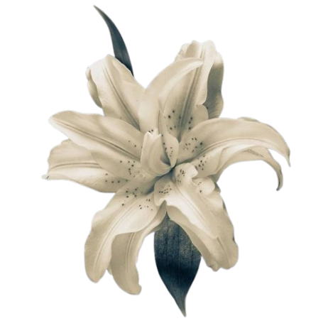
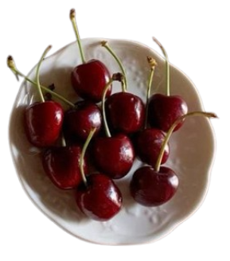

Mon chéri.
 Wonders of the World
Sebuah website yang dibuat dan dipersembahkan untuk sosok cantik nan indah bernama Tsania Fajriani. Ia ajaib, sangat ajaib, bahkan 7 keajaiban dunia pun tidak ada apa-apanya dibandingkan dirinya. Ialah "Wonders of the World" itu sendiri.
Mi amor.
Latar Belakang
Sebagaimana bumi diciptakan untuk ditempati manusia, segala hal yang ada di dunia ini pasti memiliki alasan untuk ada. Begitu pula website yang berisi sosok terindah di semesta ini. Seluruh bagian dari website ini dibuat secara manual. Bahkan, seluruh kata-kata di website ini merupakan buah pikiranku sendiri. Semua itu kulakukan bukan tanpa alasan, melainkan untuk menyimpan kenang-kenangan yang berkaitan dengan sosok terindah di semesta alam. Sosok yang saking indahnya, bisa kukatakan unreal. Sebab, tidak ada satupun hal di semesta ini yang dapat menyaingi keindahannya. Sosok yang terlalu indah untuk berada di semesta ini. Ciptaan yang sempurna, tiada celah kekurangan sama sekali padanya. Sosok yang sangat cantik, indah, lucu, menawan, menarik, mempesona, menggemaskan, imut, menyenangkan, baik, ramah, sopan dan segala hal baik lainnya, secara bersamaan. Sosok yang sangat sempurna dalam segala-galanya, bukan hanya dalam penampilannya. Sosok yang saking sempurnanya, menjadi tak tergambarkan. Sosok itu bernama Tsania Fajriani.